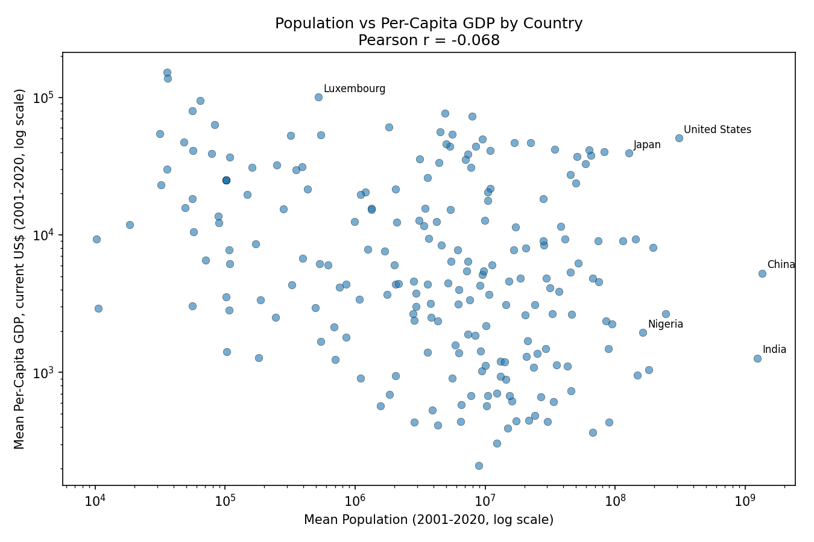
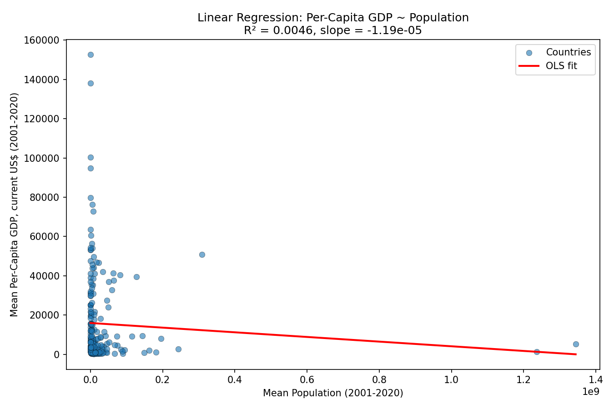

Unit 4 — Linear Regression with Scikit-Learn
Seminar activity: does a country's population predict its per-capita GDP? Using the World Bank Global_Population.csv and Global_GDP.csv tables, I measured the correlation between the two and then fitted a simple linear regression (population as the independent variable, per-capita GDP as the dependent variable).
Data preparation
- Per-capita GDP is not given directly — derived as GDP ÷ Population for each country/year, then averaged.
- World Bank aggregate rows ("World", income-group bands, regions) removed using
pycountry's ISO-3 country-code list (plus Kosovo, which has no formal ISO code), keeping actual countries only. - Population covers 2001–2021 but GDP only runs to 2020, so the usable overlap is 2001–2020 (20 years).
- Missing values: a country needed at least 5 overlapping, non-missing years to be kept; its mean was then taken with
skipna=Trueover the years available. 214 countries survived this filter.
Task A — Correlation
Pearson r = −0.0675, p = 0.325 → essentially no linear relationship between a country's average population and its average per-capita GDP.
The log-scale scatter plot shows why: per-capita GDP tracks economic development, not headcount. Small rich countries (Luxembourg) sit far above huge ones (China, India, Nigeria), and there is a wide spread of income levels at every population size.

Task B — Linear regression
Per-Capita GDP ≈ 15,946 − (1.19 × 10⁻⁵) × Population. R² = 0.0046 — population explains under 0.5% of the variance in per-capita GDP, confirming it is a very poor predictor on its own. The fit line is nearly flat and, on the raw (non-log) scale used for the regression plot, visually dominated by the China/India outliers.
